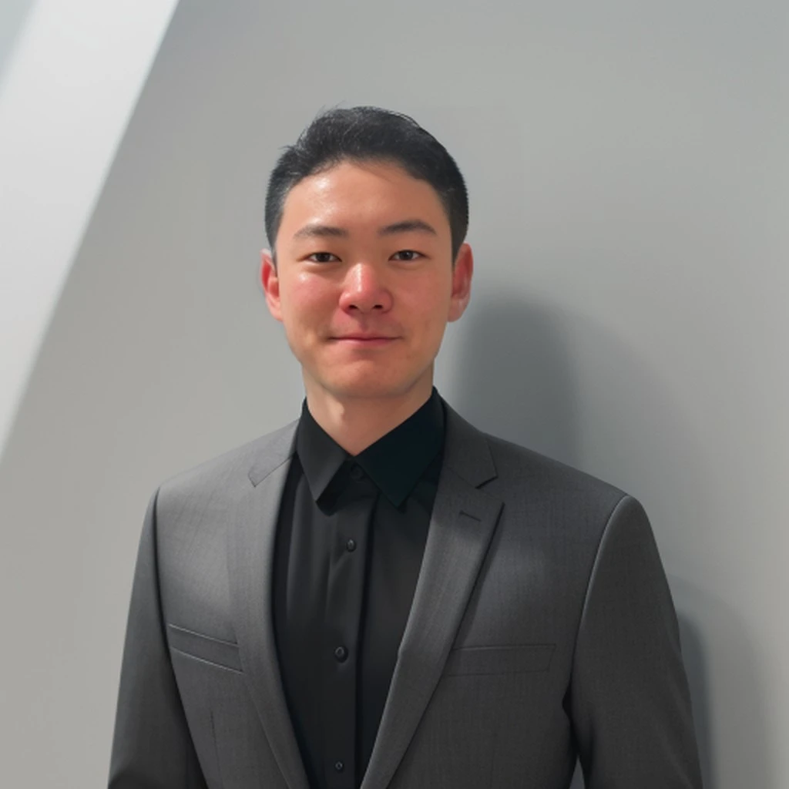

佐賀大学医学部医学科の学生。救急医学講座の「押しボタンプロジェクト」で研究員・実施担当を務め、独居高齢者の孤立死を防ぐ見守りの仕組みづくりに取り組んでいる。学生団体SCS(佐賀大学学生地域交流の会)代表として、団地のサロンや子どもの居場所づくりなど地域との交流を続けている。
また、佐賀バルーナーズDAOのモデレーターや、えびすFM「バルーナーズDAOおとなりさんラジオ」のパーソナリティとして、スポーツを通じたコミュニティづくりにも関わる。
- NICKNAME
- もりぞう
- AFFILIATION
- 佐賀大学 医学部医学科Community Health & Social Isolation Research
- ROLE
- 押しボタンPJ 研究員SCS 代表 / バルーナーズDAO モデレーター
- STRENGTHS
- 回復思考・学習欲・共感力Restorative / Learner / Empathy ・ ENFP-A
#本音キャッチャー#データ✕共感#医療の枠を超えて#持続可能な"恩送り"#シナジーハンター#プロセス可視化マスター#笑顔の連鎖メーカー
経歴・役職
- 佐賀大学 医学部医学科 在学中
- 押しボタンプロジェクト 研究員・実施担当佐賀大学医学部附属病院 救急医学講座
- SCS(佐賀大学学生地域交流の会) 代表
- 佐賀バルーナーズDAO モデレーター
- バルーナーズDAOおとなりさんラジオ パーソナリティえびすFM
- 学生団体Vcan 中高ツアー講師
資格・段位
- TOEIC 760
- TOEFL iBT 4.0/6.0従来スコア80/120相当・CEFR B2
- 肝炎コーディネーター
- BLSプロバイダー / ICLSコース修了
- BeHelp講習修了
- 詩吟 1級雅号「真水」
- 少林寺拳法 初段